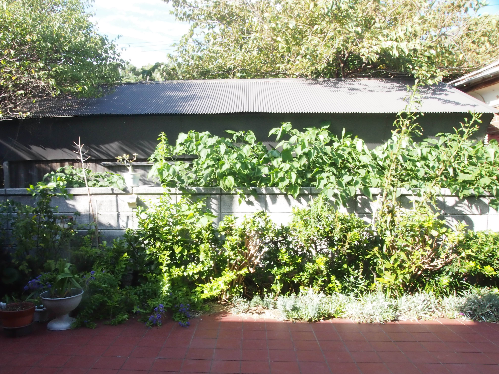

雑文 1 兼 テスト
最近は肌寒くなってきて, かと思えば突然暑くなったりして, 着るものに困る. 実はホームページを作ろうと思い立ったのは今年四月とかで, Jekyll を使うか Astro を使うかとか, ページの切り替えどうするかとか, スマホでの表示がどうとか, 画像を表示するページを作りたいだとか, ぐずぐずやることを増やして行ったらめんどくさくなっていったのもあって, 公開がこんなに遅れてしまった. 自分はやりたいと思ったことの半分以上はやらないかちょっとだけやって飽きて終わってしまうんだけど, どうしたらいいんだろね.
院試が終わって, 特にこれと言ってなにもせずだらだらしていたらまた時間が過ぎて, 卒論やらインターンやらが始まって生活が騒がしくなってきてしまった. 忙しかった時期にやりたいなと思っていた意味のないことの多くができないまままた忙しさの波が来てしまう. 卒論はまだ論文を読んでキャッチアップしている段階である. 恥ずかしながら成績があんま良くなかったので当初志望していたところと若干違うところに配属されて, この分野はこの分野で面白くはあるのだけど, 自分に適性があるのかということについてはあまり自信がない. いわゆる数理工学のなかでも相当理論寄りの分野というのもあると思う. 院ではまたやることが変わってくるので(こっちの配属は志望ど真ん中なので良かった)四ヶ月程度の付き合いになるが, 最終的にこの分野と仲良くなるか, あるいは面白いことができるといいな. インターンもインターンで全然やってこなかったことを任されるので正直結構大変ではある. 内容はともかく, 労働をしていると社会への自分の適性みたいなものについて考えざるを得なくなってくる. 労働といっても自分のやっているのなどは体力的には結構ぬるいほうであるのだろうが. きもちとしても社会とか秩序とかの足音が聞こえてきて, まあまあ穏やかではなくなってきている.
そういえば以前ツイッタでストイックそうな人が”忙しい”という言葉を使わないようにしている, と言っているのを見たことがある. そういう特定の言葉に対する繊細さはとても大事だと思うし, 実際自分も”脳死”とか”難民”とかはあまり使わないようにしている(使っている人に対して徳がないと感じるみたいなことでは決してないです……). ただ”忙しい”に関しては少なくとも不真面目な自分にとってはわりと中立的な言葉であるように感じられるので, 普通に使わせてもらう.
絵. どうしようか. いろいろ悩んでいる. 生活とのバランスをとる上で, 線を最低限整えたゆるいらくがきを一時間強ぐらいで出せるようにしたい. 塗りもあんまりべたべたやらずにささっと映えるものを仕上げる力を身につけたい. そもそも絵という媒体の本質は捨象であって情報量ではない. 時間をかけても下手くそは下手くそなのである. 塗り, ワンドロとかやっている人のを参考にするべきかも. そういえば今月も写真模写できずに終わるんだろうか………
最近摂取したもの (増えていくかも)
- オッペンハイマー (映画)
- クレヨンしんちゃん 嵐を呼ぶ モーレツ!オトナ帝国の逆襲 (映画)
- 出会って4光年で合体 (漫画)
- スーパーバニーマン (ゲーム)
- Project Zomboid (ゲーム)
- 自分はゲームを普段あまりやらないもので, お絵描き友達に勧められてやった. 楽しいんだけど, ただやっぱり自分にとってゲームのある生活は良いとか悪いとかではなく, 違和感があるな. でもノベルベームなどは今度やってみたいかもしれない.
- 卒論のための論文
- 証明について過去の論文を参照されたし, みたいにするのはやめてほしい. しんどいので.